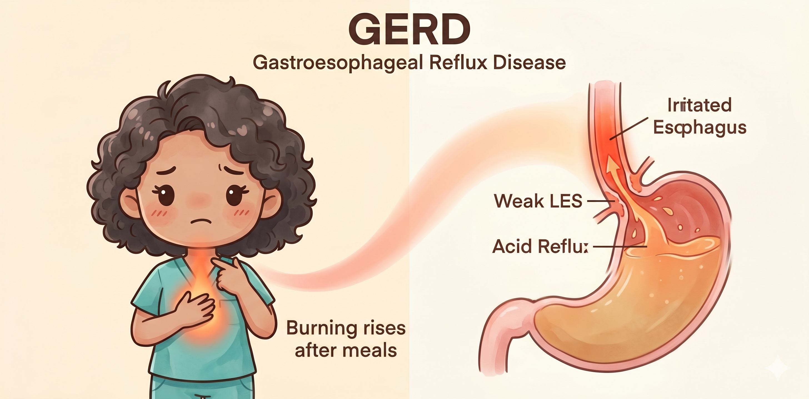
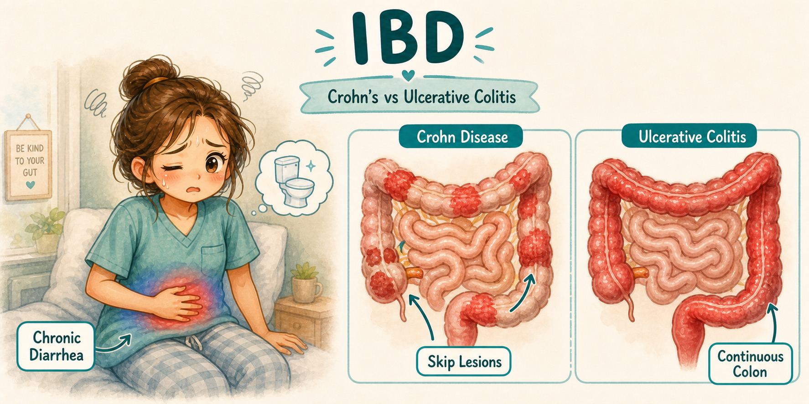
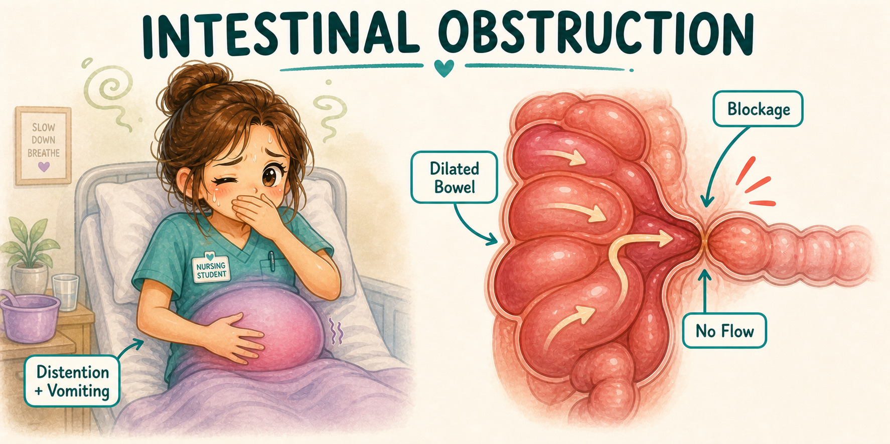

Adult Health Final GI
Upper/Lower GI Study Room
Watch the video here, jump by timestamp, then flip the matching Upper GI and Lower GI cards without leaving the site.
GERD/PUD
IBS vs IBD
Obstruction
Colorectal screening

Red danger / emergency
Green nursing action
Orange teaching / discharge
Purple exam trap / compare
Video 1
Jump to cards
GI Upper/Lower Crash Course
Flashcards for this video
Open full Final GI deck
Upper + Lower GI cards
GI My Notes
Keep the sheet beside the video.
This room covers the same Upper/Lower GI lane as the packet: reflux, ulcers, IBD comparison, toxic megacolon, diverticulitis, obstruction, and colorectal screening.





What should be reviewed next?
If a specific Upper/Lower GI topic still feels fuzzy, send it in. Good requests can become a flashcard, video timestamp note, short post, or future review section.
Request an Upper/Lower GI topic